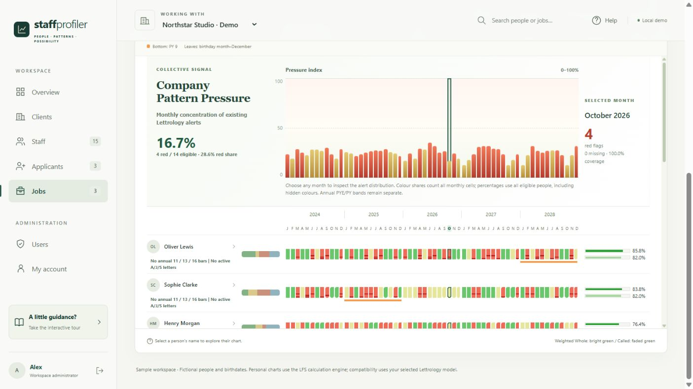

Give people more
reasons to stay.
Prepare for check-ins with individual context. Ask about workload, recognition and development before a concern becomes a resignation conversation.
Build a habit of supportTHE HUMAN SIDE OF HR
There’s more to your people than a job title. Bring individual profiles, team relationships and monthly patterns into focus—and make your next conversation count.
Real calculations. Two perspectives. No sign-up.

For the people behind
every kind of business.
PEOPLE ARE YOUR BUSINESS
Your people bring different perspectives, pressures and ways of working. Give managers a shared starting point for understanding those differences—and responding with care.
Prepare for check-ins with individual context. Ask about workload, recognition and development before a concern becomes a resignation conversation.
Build a habit of supportExplore relationships from a chosen person’s perspective. Bring potential differences into a conversation about expectations, feedback and collaboration.
Explore team relationshipsAdd a team perspective to applicant discussions. Explore onboarding needs and working relationships alongside skills, experience and structured interviews.
Think beyond the vacancyA CLEARER VIEW, IN ONE PLACE
Move from a team-wide overview to an individual conversation.
Explore the actual software below.
Actual software screenshot · Fictional demo people
01 / THE TEAM VIEW
View monthly indicators across a group, compare periods and explore individual timelines. A shared view helps managers decide what to discuss next.
The indicators are interpretive model outputs, not measured stress levels or forecasts of employee behaviour. Confirm what matters through conversation and workplace evidence.
FROM PERSPECTIVE TO PRACTICE
A practical starting point for HR leaders, business owners
and the managers who support people every day.
Retention is built in the everyday experience of work. Use the monthly review to prepare a thoughtful check-in, explore a recurring indicator, and ask the employee what is actually happening.
THE OPPORTUNITYA clearer conversation. A more considered support plan.
Review the pattern. Ask the person. Agree on a next step.
A team is a network of relationships. VALEX-innoVAtion lets you change the reference person and explore how the comparison changes—giving you another perspective for a coaching or collaboration discussion.
THE OPPORTUNITYMake expectations explicit. Give differences room to be discussed.
Also ask, “What will help this person do their best work here?” Explore applicant profiles and supervisor comparisons to prepare questions about working preferences, team expectations and onboarding support.
THE OPPORTUNITYA richer interview. A more thoughtful welcome.
Use as discussion prompts alongside interviews and evidence of skills.
A HUMAN APPROACH TO PEOPLE
Our approach to using the software draws on established ideas in workplace psychology: meaningful feedback, psychological safety and fair, structured conversations.
Use descriptive themes to ask better questions, recognise effort and make expectations clear. Meaningful feedback gives a manager’s conversation purpose.
Read Gallup’s researchInvite people to explain their own experience, challenge an interpretation and say what support they need. A report should help open dialogue.
Explore psychological safetyAssess candidates against consistent, job-related criteria. Use interviews, work samples and relevant experience to inform hiring decisions.
See structured interview guidanceVALEX-innoVAtion’s profiles and indicators are interpretive tools, not validated psychological assessments, diagnoses or measurements of wellbeing. The research above informs the recommended conversation practices; it does not validate the software’s scoring model. Use employee feedback, observed performance and job-relevant evidence alongside every interpretation.
A SIMPLE RHYTHM FOR BETTER LEADERSHIP
Organise staff, applicants and jobs in a company workspace. Select the group and reference person you want to explore.
Review the monthly overview, compare relationships, and open an individual report for more context.
Ask what resonates, what doesn’t, and what would help. Agree on practical support and follow up with the person.
A useful addition to your people conversations, check-ins and onboarding process.
DON’T JUST READ ABOUT IT. EXPLORE IT.
Try a working proof of concept with the software’s comparison model.
Enter two profiles, or use fictional examples to see how it works.
YOUR CALCULATED COMPARISON
The model compares A with B and B with A separately. Each profile acts as the reference in turn, so the same pair can produce different directional scores. These percentages are model scores, not the probability of a good relationship or a hiring recommendation.
TURN CURIOSITY INTO A CONVERSATION
Discuss how you prefer to receive feedback, make decisions and handle busy periods. Ask each other what resonates—and what you would describe differently.
Changing a profile clears these results. Recalculate to compare the updated details.
This proof of concept demonstrates the calculation and comparison workflow. It does not validate the model as a psychological assessment or predict performance, retention or relationship quality. Existing screenshots show the current software interface as it transitions to the VALEX-innoVAtion brand.
A FEW GOOD QUESTIONS
What it does, how to use it,
and what to expect.
The software brings together staff and applicant records, individual descriptive reports, directional person-to-person model comparisons, and annual and monthly pattern timelines. The company overview summarises monthly model indicators, with filters and individual report views to explore them.
It gives managers another starting point for check-ins and support conversations. Explore a pattern, listen to the employee’s experience, and discuss priorities, workload or development. Retention outcomes depend on your workplace and the action you take; the software does not predict who will leave.
It can add a perspective to discussions about team relationships and onboarding. Use that perspective to prepare open questions. Hiring decisions should be grounded in job-relevant skills, experience, structured interviews and work samples. A model comparison is not a suitability verdict or a validated predictor of job performance.
No. It is the software’s summary of monthly model indicators. It does not measure psychological stress, mental health, burnout or a person’s real-life circumstances. A highlighted month is a prompt to ask and listen, rather than a conclusion about the person.
No. This website is independent from the software. The guided tour uses actual screenshots with fictional people. The two-person proof of concept runs the same comparison model locally in your browser. Names and dates are not transmitted, stored, or connected to any company workspace; you can clear them at any time.
Agree on your intended use, who can access employee information, how employees are informed, and how records will be stored and managed. The current software demo uses browser-local storage; shared company accounts, cloud storage and production access controls require separate implementation. This website does not promise those services are already available.
The workflows can be explored by business owners, team leaders, HR professionals and consultants. Start with one team and a clear purpose, such as better check-ins or a more thoughtful onboarding conversation. Confirm operational requirements for your company before expanding.
YOUR PEOPLE. MORE POSSIBILITY.
Start with a clearer view of the people who make it happen.
Try it with someone Two profiles. Your own results. No sign-up needed.